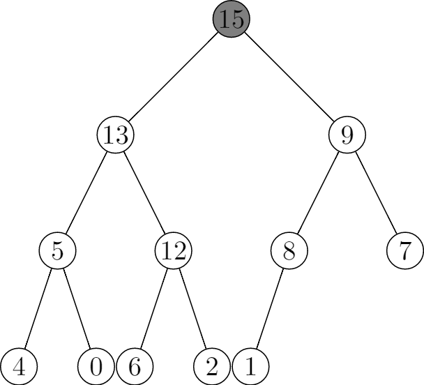
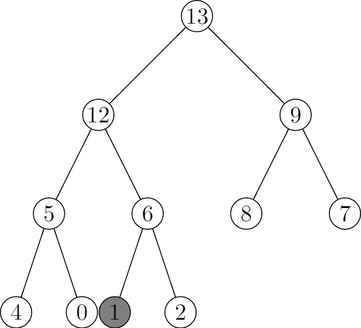

6.5 Priority queues
6.5-1



6.5-2


6.5-3
HEAP-MINIMUM(A)
return A[1]
HEAP-EXTRACT-MIN(A)
if A.heap-size < 1
error "heap underflow"
min = A[1]
A[1] = A[A.heap-size]
A.heap-size = A.heap-size - 1
MIN-HEAPIFY(A, 1)
return max
HEAP-DECREASE-KEY(A, i, key)
if key > A[i]
error "new key is bigger than current key"
A[i] = key
while i > 1 and A[PARENT(i)] > A[i]
exchange A[i] with A[PARENT(i)]
i = PARENT(i)
MIN-HEAP-INSERT(A, key)
A.heap-size = A.heap-size + 1
A[A.heap-size] = +∞
HEAP-DECREASE-KEY(A, A.heap-size, key)
6.5-4
Setting the key of the inserted node to negative infinity to make sure it can pass the truth check in line 1 of HEAP-INCREASE-KEY(A, i, key).
6.5-5
Initialization: Prior to the first iteration of the loop, the subarray A[1..A.heap-size] is satifies the max-heap before we set A[i] = key, after we set A[i] = key, it's possible that A[i] would be greater than its parent. And we cannot set a smaller key to A[i], so there may be only one violation.
Maintenance: In the for loop, we are exchanging A[i] and A[PARENT(i)], before the exchange, the subtree rooted at A[i] is a max-heap, but it may be greater than its parent, so there may be on violation.
Termination: When it's terminated, i maybe 1 or A[i] is smaller thant its parent, either makes A a max-heap.
6.5-6
HEAP-INCREASE-KEY(A, i, key)
if key < A[i]
error "new key is smaller than current key"
while i > 1 and A[PARENT(i)] < key
A[i] = A[PARENT(i)]
i = PARENT(i)
A[i] = key
6.5-7
Implement a first-in, first-out queue with a min priority queue. Call MIN-HEAP-INSERT method to enqueue with a priority, for example, use timestamp as priority. Call HEAP-MINIMUM to dequeue.
Implement a stack with a max priority queue. Call MAX-HEAP-INSERT method to push with a priority, for example, use timestamp as priority. Call HEAP-MAXIMUM to pop.
6.5-8
HEAP-DELETE(A, i)
A.heap-size < 1
error "heap underflow"
A[i] = A[A.heap-size]
A.heap-size = A.heap-size - 1
MAX-HEAPIFY(A, i)
6.5-9
First we create a k-elements min heap from the first element in each sorted list, this requires $O(k) + O(n) = O(n)$.
Then we keep extracting the min value from min heap, and insert the next value after the min value in the original list, this requires $O(\lg{k})$. And there are n elements, so it requires $O(n\lg{k})$.
Thus the running time is $O(n) + O(n\lg{k}) = O(n\lg{k})$.
def merge_sorted_lists(lists):
sorted_list = []
min_heap_elements = []
for i in range(len(lists)):
min_heap_elements.append(MinHeapElement(i, 1, lists[i][0]))
min_heap = MinHeap(min_heap_elements)
while not min_heap.is_empty():
min_element = min_heap.extract_min()
sorted_list.append(min_element.value)
list_index = min_element.list_index
next_index = min_element.next_index
if next_index < len(lists[list_index]):
next_element = MinHeapElement(
list_index, next_index + 1, lists[list_index][next_index])
min_heap.insert(next_element)
return sorted_list
class MinHeapElement():
def __init__(self, list_index, next_index, value):
self.list_index = list_index
self.next_index = next_index
self.value = value
class MinHeap():
def __init__(self, elements):
self.elements = elements
self.heap_size = len(elements)
self.build_min_heap()
def extract_min(self):
assert not self.is_empty()
minimum = self.elements[0]
self.elements[0] = self.elements[self.heap_size - 1]
self.heap_size -= 1
self.min_heapify(0)
return minimum
def insert(self, element):
self.heap_size += 1
if len(self.elements) < self.heap_size:
self.elements.append(element)
else:
self.elements[self.heap_size - 1] = element
self.decrease_element(self.heap_size - 1, element)
def decrease_element(self, i, element):
assert i < self.heap_size
assert element.value <= self.elements[i].value
while i > 0 and self.elements[(i - 1) // 2].value > element.value:
self.elements[i] = self.elements[(i - 1) // 2]
i = (i - 1) // 2
self.elements[i] = element
def is_empty(self):
return self.heap_size == 0
def min_heapify(self, i):
left = 2 * i + 1
right = 2 * i + 2
minimum = i
if (left <= self.heap_size - 1 and
self.elements[left].value < self.elements[i].value):
minimum = left
if (right <= self.heap_size - 1 and
self.elements[right].value < self.elements[minimum].value):
minimum = right
if minimum != i:
self.elements[i], self.elements[minimum] = \
self.elements[minimum], self.elements[i]
self.min_heapify(minimum)
def build_min_heap(self):
for i in range((self.heap_size - 1) // 2, -1, -1):
self.min_heapify(i)